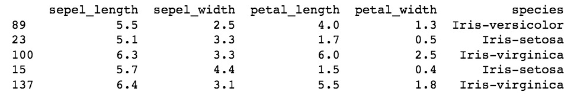

2. 导入数据
2.1 准备工作
新建名为 Codelab 的目录作为项目目录，在该目录下新建名为 data 的目录用于存放数据集。
复制模板文件01_iris_classification_templete.ipynb到Codelab目录下:
双击打开文件 01_iris_classification.ipynb，首先进行依赖包的导入。需要导入以下依赖包：
## 导包
import pandas as pd
import numpy as np
import matplotlib.pyplot as plt
import tensorflow as tf
from sklearn.model_selection import train_test_split
2.2 导入数据
选中 2.1 导入数据 单元格，插入新的代码单元格，将 iris.data 的数据读入到 DataFrame 对象中。 代码如下：
datasets_path = 'data/iris.data'
iris = pd.read_csv(datasets_path,header=None)
iris.columns =['sepel_length','sepel_width','petal_length','petal_width','species']
print(iris.sample(5))
read_csv 用来读取给定文件地址的csv文件。
header参数用来指定行数作为列名，None代表不使用文件中的任何一列作为列名。
columns属性用来表示列的标签，在这里我们用来为列命名。sample(5) 用来随机获取5个样本。
一个可能的运行结果如下：

参考文献
- Keras Documentation https://keras.io
- keras 中文文档 https://keras.io/zh
- Preprocessing data https://scikit-learn.org/stable/modules/preprocessing.html